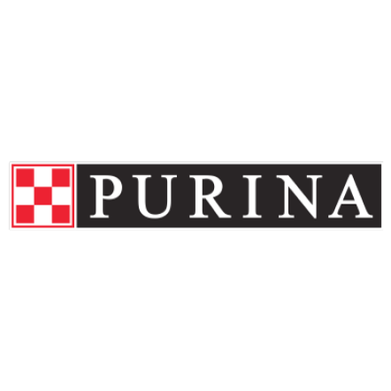
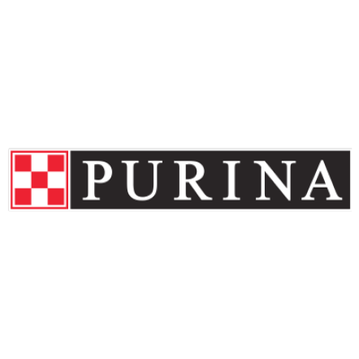

- English
- My page
- Logout
The meeting to present an alternative diet for our pets is held annually to present the advances in this field. A more balanced and natural diet represents an improvement in the quality of life and a reduction in visits to the clinic for our pets.
MarconiMorales@vetava.com
The ava logo was designed in 2015 to honor a Saint Bernard who arrived at the clinic injured on her own, later becoming part of the team.

 
